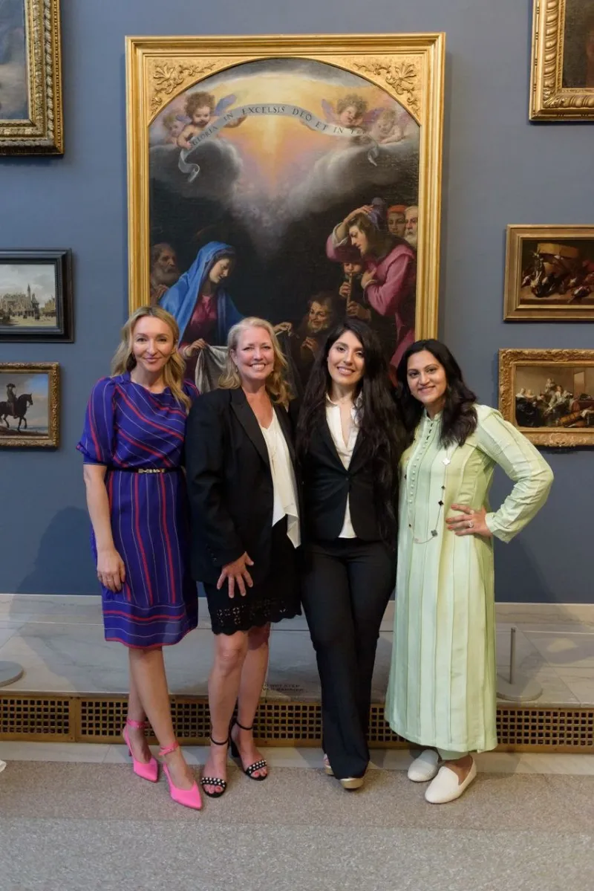
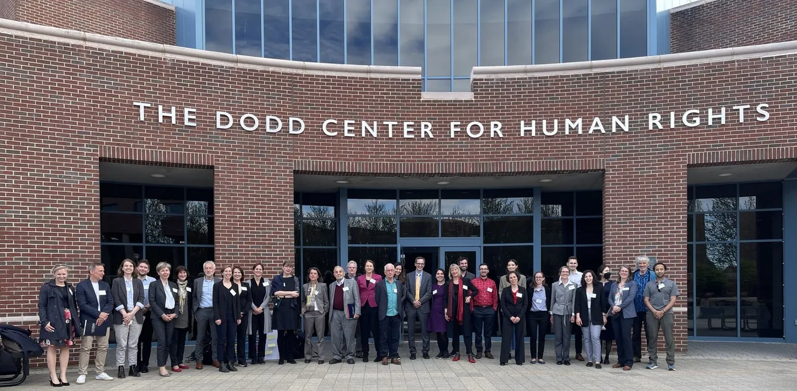

Photo: University of Connecticut, Storrs · Daderot · CC0, cropped, via Wikimedia Commons
The full CV lists every appointment, publication, talk, grant, and training program.
Download CV (PDF)Education
Ph.D., Contemporary French Literature and Francophone Studies
University of Connecticut
Dissertation: Representing the Holocaust in Novels and Films: Anna Langfus and Six Directors. Advisor: Roger Célestin.
Graduate Certificate in Human Rights
University of Connecticut
M.A., French Literature
Shahid Beheshti University, Tehran
Thesis on Annie Ernaux.
B.A., French Language and Literature
University of Tabriz
Experience
Academic appointments
Current
Research Associate
Inclusive History Project, University of Michigan–Dearborn
“The University of Michigan in the Middle East”: Persian- and English-language materials on Iranian diaspora history.
Current
Research Associate
Hadassah-Brandeis Institute, Brandeis University
Research affiliation; HBI Research Travel Grant, 2026.
Current
Part-Time Faculty, History
Washtenaw Community College
The Early Modern World; History of the Holocaust.
Non-Residential Research Fellow
USC Shoah Foundation
Research on testimony.
Researcher
UConn Global Affairs and Dodd Center for Human Rights
Human rights research, University of Connecticut.
Graduate Instructor
Department of Literatures, Cultures and Languages, University of Connecticut
Elementary French, sole instructor of record.
Oral history and public humanities
Interviewer Certification
USC Shoah Foundation
Witness-led interview protocols and archival metadata standards; two French-language interview sessions, July and August 2026.
Current
Educational Consultant
Holocaust Awareness Museum and Education Center, Philadelphia
Curriculum and programming for Holocaust education; review of materials for scholarly accuracy.
Exhibition Writer (contract)
Museum of Tolerance, Los Angeles
Research briefs and interpretive texts for an exhibition on antisemitism in Tehran; translation of Persian-language recordings into English.
Oral history archive research
UCLA Iranian Jewish Collection · Harvard Iranian Oral History Project
Analysis of Persian-language Iranian Jewish testimony.
Online Volunteer Translator
United Nations Volunteers (UNV)
Service
Current
Member, Steering Committee
Abrahamic Programs for Academic Collaboration in the MENA Region, Office of Global Affairs, University of Connecticut
Panel chair and organizer
SAMLA, Atlanta
“Knowledge After Catastrophe: Trauma, Testimony, and the Ethics of Representation.”
Languages

